El Baile de la Vida
Un paso adelante, un paso atras
 Sofía Preuss
Sofía Preuss
Un paso adelante, uno atrás, me caigo y me vuelvo a levantar. El siguiente escrito busca sacar a flote la fortaleza en medio del mar de incertidumbre de la pandemia. La familia, sala de ensayo, nos prepara para el baile de la vida, la belleza de esta y su función en cada uno de nosotros. El presente es algo que debemos enfrentar, pero con una mirada esperanzadora hacia el futuro.
Quién se podría haber imaginado pasar encerrado en su casa tres meses y contando. Absolutamente nadie estaba preparado para esta situación, ni física ni psicológicamente. En mi caso, definiría varios de mis días como una montaña rusa de emociones, paso de un estado anímico a otro: un par de horas estoy esperanzada en salir, al rato me siento agobiada, ahogada en un mar de incertidumbre sobre el mañana, solo quiero llorar y rezo para que todo esto termine pronto. Otras cuantas veces me siento como si no fuera yo, como si estuviera en un paréntesis, pero que el tiempo no se ha detenido, mi vida sigue corriendo. Paro de bailar, pero la música sigue sonando y avanzando.
En este tiempo me ha sorprendido como cada integrante de mi casa enfrenta de manera diferente lo que está sucediendo. Han sido días difíciles, quiero visitarlos, pero también cuidarlos, sobre todo a mis abuelos. En todo caso ellos no se han perdido una, porque con mis primos le enseñamos a usar Zoom. Fue todo un acto de paciencia, pero de amor también. Así logramos mantenernos todos conectados a pesar de la distancia.
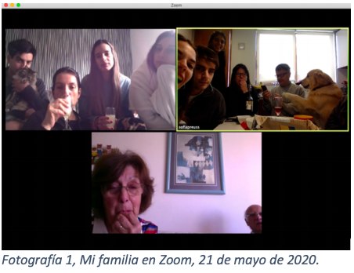Para el cumpleaños de mi abuela nos juntamos, preparamos un video entre todos y lo proyectamos ese día. Comúnmente vamos a su casa, pero este año fue especial. Con mis hermanas preparamos la tabla de aperitivo con papas fritas, quesos, frutos secos y el refrescante pisco sour que prepara ella. Conversando empecé a sentir como si estuviéramos todos físicamente juntos, como en lo viejos tiempos. A pesar de estar separados el verles las caras y sus expresiones, los ojos chinos de tanto reír me hicieron sentirlos verdaderamente ahí. Voy más allá de la pantalla. Sentados en el living de la casa de mis abuelos, una música tenue siempre puesta, el dulce olor de las alstroemerias blancas en el mueble de la entrada. Casi puedo sentir sus brazos rodeándome y apretándome. La sensación de que nunca me van a soltar invade mi cuerpo. Recuerdos.
Recuerdos que se me escapan como agua entre mis manos, que me sacan aquí, me dan vitalidad, me elevan, me llevan mucho más allá que estas cuatro paredes; me regalan un segundo de realidad que me hace respirar. Al igual que dice mi compañera Victoria, que experimenta su libertad en Zoom con sus amigas, asemejándolo a una experiencia de realidad virtual.
Me llena ver la cara de felicidad que ponen cada vez que llegamos y más aún ahora, cada vez que nos conectamos. Repetimos siempre las mismas anécdotas, mi abuelo cuenta nuevamente la historia de cuando a mi tía se le escapó su perro, los chistes fomes, los veraneos todos juntos (donde no pueden faltar el bingo ni las cartas), y ahora comentar el notición del matrimonio de mi prima. Imaginarme bailando, sintiendo las vibraciones de la música, poder celebrar, reír, llorar de emoción; me da fe en el futuro, que esto pronto va a terminar. Los ojos de mi abuela se rebalsan al decir que ojalá ellos puedan ir, que no se lo quieren perder por nada del mundo y que se cuidarán al máximo para poder participar. Hay un silencio ensordecedor, pero de inmediato mi prima dice que todos estamos en esta pelea juntos y que juntos vamos a salir.
La armonía regula los desórdenes y sustenta la naturaleza. En este caso, la armonía en las relaciones familiares para llegar al bien común: el amor. “He aquí un punto común a todas las matemáticas: no tiene por sí mismas ninguna sensorialidad, solo se les puede captar intelectualmente, de manera abstracta” (Aumont, J, 154). Entre tantos momentos, el estar ahí acompañándola en un día tan importante para ella, el juntarnos en familia, el disfrutar, el enfrentar todos los problemas, el apoyarnos es amor puro. Como dice Aumont, va más allá de lo sensorial, aquí es el hecho de compartir ese momento, compartir el amor. La familia reunida en esa ocasión no demuestra más esta idea de participación, de crecer y de alegría, de lo que es verdaderamente la familia. Recuerdos que durarán toda la vida, que nadie te puede quitar.
Es como la armonía del ballet. En la música cada nota se corresponde. Una consonancia natural manejada por las matemáticas, que se hace al oído humano todo un placer. Por otro lado los movimientos, ligeros pero controlados, en donde todo se concentra en el equilibrio, el ritmo y la precisión. Las luces y sombras juegan un rol fundamental: determinan la apariencia de la forma, conforman el show visual. Su vestuario, un uniforme que a la vez expresa la preparación y particularidad de este baile. Cada paso, cada elemento tiene una función determinada en la presentación. Todos los bailarines se manejan en son de un bien y amor común por el baile, un amor de entrega y de sacrificio. Realmente se entregan a él en todas sus dimensiones, cada ensayo, cada caída los hace mejores en su disciplina. La vida es un baile. Cada caída nos enseña algo y nos hace mejores. ¿Será que este confinamiento es una prueba más, un ensayo más, de este baile que es la vida?
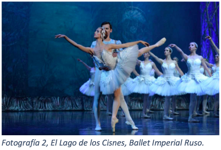La familia es un pilar fundamental para mí, estoy completamente segura de que no sería la misma persona que soy hoy si no tuviera a cada uno de ellos. Definitivamente lo defino como una suerte, no todas las personas pueden contar con una y estoy agradecida de la mía. La familia para mí es un nido de confianza, seguridad y apoyo, es un nido de amor infinito, donde uno se puede equivocar, donde uno crece, donde se puede amar y ser amado. Donde uno aprende a amar. La familia es ese lugar donde puedo ensayar este baile, y caerme, caerme y volver a levantarme. Sé que mi familia no es perfecta, pero el ideal de familia, el ideal de belleza que va más allá de lo sensible, más allá de la imagen de familia como tal si no más bien en lo que ella significa, en su fin último de enseñanza y amor, es lo que me hace quererla y agradecerla tal cual es.
Es fundamental para el hombre aprehender el concepto de Ideal, es a partir de este que se desarrolla como tal y puede apreciar verdaderamente las cosas, y en ellas su belleza, “sin esos recuerdos no amaría esta obra de la misma manera” (Aumont, J, 186). De este modo, puede comprender, incorporarlo y realmente hacerlo propio, valorarlo, ya sea en la belleza del ballet, de la familia o de la vida. Me remonta a la intimidad de lo bello con la Idea, este captar su esencia para llegar a su verdad y bien. “En efecto, como ya hemos dicho, toda alma humana ha debido necesariamente contemplar las esencias, pues de no ser ası́, no hubiera podido entrar en el cuerpo de un hombre” (Platón, 297). El hombre está hecho para el Ideal, y el Ideal para el hombre.
Relacionado a la anterior es que nace el llamado “buen deseo”, “el buen movimiento del alma” (Aumont, J, 152), es aquel que nos eleva, que nos hace escapar de lo sensible e ir a lo esencial; “lleva de lo bello a la Belleza” (Aumont, J, 152) a esa idea fundamental de la familia, como nido, un nido de amor. Mi familia y la conectividad que he podido mantener con ellos, es mi resistencia a este encierro. El llenarme de recuerdos, de aire puro, aire de realidad, que me hacen volver con más fortaleza que nunca. Por un lado, el hecho de poder desconectarme de todo lo que me puede estar pasando y conversar con ellos, reírnos y pasar un buen rato como siempre lo hacemos. Por el otro, me mantiene esperanzada, fuerte y con ánimo para poder continuar el confinamiento, centrarme en el ensayo para poder seguir bailando. El deseo de verlos es enorme, pero debo mantenerme fuerte, seguir en cuarentena es un paso más cerca de poder cumplirlo.
La música suena. Sigue ensayando, sigue resistiendo, para poder seguir bailando.
Sumergida en sueños
luces y sombras
Un ocaso multicolor es el punto de partida de la noche y de los sueños. En estos, los recuerdos del pasado vuelven a la vida. La línea entre la realidad y la imaginación se difumina. Como dice Calderón de la Barca en una de sus obras: “¿Qué es la vida? Un frenesí ¿Qué es la vida? Una ilusión”
La monotonía se ha apoderado de nuestros espacios interiores y exteriores en esta cuarentena. Nos levantamos, vamos a la universidad online, almorzamos, estudiamos, un Zoom con amigos y a la cama para comenzar un día prácticamente idéntico. La rutina es la misma, pero hay algo que ha cambiado en el paisaje. Son las 17.43 del 18 de junio, en mi caso octavo día1 desde que comenzó la cuarentena total —aunque el panorama es el mismo desde marzo—. El cielo se comienza a teñir de colores. 17.45 en el horizonte se divisa una leve capa naranja transparente. 17.53 el naranjo se intensifica y a medida que se acerca al cenit, se esfuma entre morados y celestes pastel. Se definen nuevas texturas gracias a las nubes invernales que tejen un ritmo similar a las olas en un lago cuando el viento las roza. 17.54 solo bastó un minuto para que el naranjo se convirtiera en un rosado furioso, fosforescente. Las texturas se acentúan como si el viento que antes rozaba el agua ahora estuviera golpeándola directamente.
17.55 cambio de perspectiva y dirijo mi mirada a la ventana que da hacia el poniente. El panorama es un espectáculo. Los colores se degradan entre las texturas de las nubes. Un cuadro de esencias intensas, luces y sombras aún más profundas. No se puede describir con otras palabras, es una vista sublime. Kant ya lo decía: “el día es bello, la noche sublime” (Kant, I, 3). Anteriormente, Sofía Preuss habló del ideal de belleza propia de los clásicos. La belleza de la familia infunde amor, en cambio lo sublime como este atardecer un profundo respeto (Kant, I, 4). Este paisaje es la magnanime puerta de entrada de la oscuridad. La inmensidad del cielo pintado con tan cálidos e intensos colores me provoca una sensación vertiginosa de no querer desprenderme. Un escalofrío. No puedo dejar de contemplar esas texturas coloreadas en su sutil y veloz movimiento.
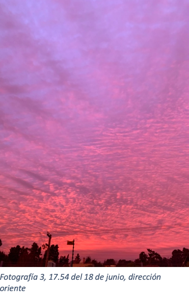El ocaso del día trae a mi mente el ocaso de la vida. Me vuelve consciente de que esta pandemia está acabando con muchas vidas —y yo ¿cómo estoy aprovechando la mía? —. Al mismo tiempo el hecho de poder captar, sentir y contemplar el paisaje, da cuenta de la grandeza y sensibilidad que tenemos los seres racionales (Kant, I, 2). Este atardecer de nubes pinceladas con las luces del sol es una maravilla. Decido inmortalizar ese momento en una fotografía para recordarlo siempre y también para poder compartir esta experiencia con mis amigos. Grande y grata es la sorpresa me llevo al encontrarme con las redes sociales plagadas de publicaciones de este singular momento. El cielo es el mismo, pero la perspectiva que adquiere en cada una de estas fotos es única. Da cuenta de la subjetividad de nuestra mirada ante la realidad.
El día se despide con nubes de colores que remiten a un mundo onírico. La puerta de entrada de la noche es también puerta de los sueños. Calderón de la Barca cuenta “La vida es sueño y los sueños, sueños son” (De la Barca, C, 190). En su obra literaria juega con el claroscuro propio del estilo barroco. La luz incide sobre los personajes para crear un juego con las sombras. Tal como el atardecer muestra el abismo de un paisaje, los sueños reflejan la inmensidad de nuestra mente.
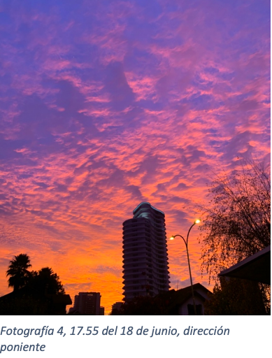La Vida es Sueño relata la desgracia de un hombre que ha sido destinado a vivir en un calabozo y por eso confunde la vida con los sueños. Lo sublime conmueve. “La desdicha de los demás despierta en el espectador sentimientos compasivos y hace latir su corazón con desdichas extrañas. Nos sentimos dulcemente conmovidos y vemos íntimamente la dignidad de nuestra propia naturaleza” (Kant, I, 4). Este es el sentimiento que se despierta en Rosaura al encontrarse con la condena de Segismundo. Y es precisamente el sentimiento que despierta en mí.
“Con asombro de mirarte, con admiración de oírte, ni sé qué pueda decirte, ni qué pueda preguntarte; sólo diré que a esta parte hoy el cielo me ha guiado para haberme consolado, si consuelo puede ser del que es desdichado, ver a otro que es más desdichado” (De la Barca, C, 28).
El protagonista, ante su situación, se cuestiona qué es la vida y en qué se diferencia de la realidad de un sueño.
“Sueña el rico en su riqueza que más cuidados le ofrece; sueña el pobre que padece su miseria y su pobreza; sueña el que a medrar empieza, sueña el que afana y pretende, sueña el que agravia y ofende; y en el mundo, en conclusión, todos sueñan lo que son, aunque ninguno lo entiende” (De la Barca, C, 188).
Porque los sueños son interpretaciones de nuestro mundo consciente e inconsciente. Estos remiten a una realidad subjetiva. Y qué es esa realidad sino un recuerdo. Una experiencia que vive en el sujeto. Así como la perspectiva en la que capturamos un atardecer.
Al igual que Segismundo yo resisto al encierro en mis sueños. Me siento identificada con su reclusión y el sentimiento de abatimiento. La condición en la que se encuentra y su catarsis, a través de las palabras, muestran una melancolía que me estremece el alma. Al encontrarme en una realidad similar busco en mis sueños los recuerdos bellos del pasado. Hallarlos en la noche hace que la monotonía del día tenga un valor diferente. Cambia mi perspectiva. Me devuelve la vitalidad porque me da una razón para seguir resistiendo. Recuerdos que no dejan de ser sublimes, pero esta vez nobles, porque me provocan un sentimiento de belleza general. Gran capacidad tenemos los seres humanos de volver a esos momentos con nuestra mente. Los sueños que se dan en una profunda oscuridad traen luces del pasado. Luces que nos permiten seguir resistiendo a esta pandemia. Porque tanto soñar como recordar es volver a vivir.
Puertas al aire
Un viaje al pasado
Rancière afirma que la emancipación de esta sociedad hegemónica implica liberarse de lo rutinario y la búsqueda de un bien común. Parece imposible pensar en ambas, cuando hace bastante tiempo estamos viviendo en una constante repetición y desesperanza. Sin embargo, he aprendido a respirar, a sentir y a sufrir gracias a mis recuerdos, mis puertitas al pasado. Para poder resistir, hacerme cargo y no permitir que me obliguen a mirar.
Existe un momento en la vida de todo ser humano donde el corazón se acelera, la voz se quiebra, el cuerpo se aprieta y los pulmones se contraen. Nuestro cuerpo no reacciona. Hasta pestañear parece un acto lleno de esfuerzo y fuera de que los pulmones estén apretados, parecen tener demasiado en su interior. Ya no cabe nada más, el aire ya no parece una opción y dejamos de hacer eso que sabemos de memoria: respirar. Y la verdad es que hace ya un tiempo, no logro llenar mis pulmones de aire, salvo por ciertos momentos donde logro, aunque sea por un segundo, este acto liberador.
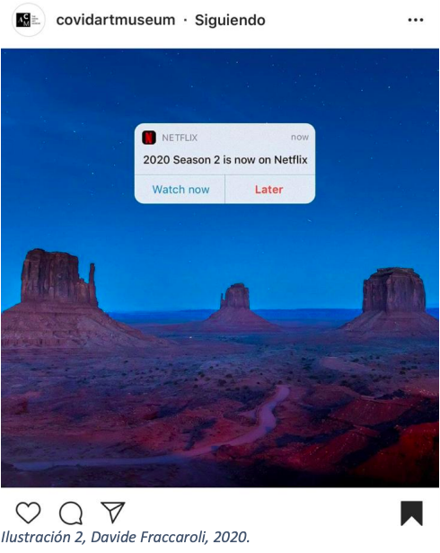Cuatro meses más, cuatro meses menos, es lo que llevamos viviendo, más bien sobreviviendo, una pandemia. Pandemia, que palabra tan fuerte, antes no conocía su significado, hoy me aterra. Solo puedo asociar este tiempo a mascarillas, miedo, virus, encierro, muerte. No logro comprender cómo es que algo tan pequeño como una partícula me quitó todo, mi libertad, mis amigas, mi familia, mi valentía. Encontrar paz o tiempo para respirar en medio de todo esto, parece imposible. Cada vez que salgo mi espalda se aprieta y algo me acecha.
En cada esquina hay una imagen, una noticia o una conversación sobre este virus, me exponen millones de atrocidades y esperan que yo me quede perpleja esperando y preguntándome que viene después. Sin embargo, Rancière me ayudó a entender que yo nunca he sido un espectador pasivo. “Ser espectador no es la condición pasiva que tendríamos que transformar en actividad, es nuestra situación normal” (Rancière, J, 23).
Fuera de que el virus aún no me ha contaminado, mi cerebro ya no funciona igual que antes. “No puedo más”, pienso todos los días, seguido de un “que egoísta soy, hay gente pasándolo mucho peor”. Cuando hablo con los que me rodean la respuesta es la misma y cuando otros demuestran su sufrimiento conmigo, la respuesta lamentablemente es igual. Leyendo a Rancière lo entendí, vivimos en una sociedad hegemónica, todo es “tal y como nuestra sociedad lo ha modelado a su propia imagen” (Ranciére, J, 11). Una que a pesar de bombardearme con sufrimiento e imágenes que no tolero, no me deja sufrir esta pandemia.
La egoísta no soy yo. Lo egoísta es pensar que el sufrimiento de otro no es válido. Que poco sano es no tener a nadie para comentar este tipo de sentimiento, un sentir que es simplemente humano. Mi forma de sufrir la pandemia se transformó y me encontró una noche. Desde ese momento me he permitido sufrir, a solas, pero sufrir.
Es justo en ese momento, ojos hinchados, cabeza retumbante y una inmensa falta de aire, el que me lleva a tomar mi computador una vez más en el día. Es justo en ese momento, dónde mis almohadas se sienten por fin blandas y mi mente logra descansar, cuando llevo mi mouse al mejor lugar de mi casa, mis fotos. Técnicamente las imágenes no tienen sonido, pero la verdad es que yo las escucho claramente, parecen millones de puertecitas al pasado, uno lleno de colores, personas y lugares. Para mi compañera Florencia Molina, las imágenes mentales son fundamentales y sumamente mejores que cualquier fotografía, lo que comparto profundamente. Sin embargo, son mis fotografías las que me permiten recordar con tanta vivacidad el pasado.
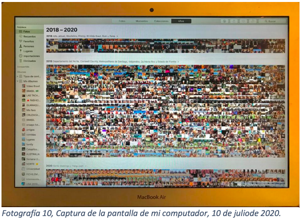No puedo evitar sonreír. Que vida más bellacada imagen una obra de arte en la que quiero sumergirme y no salir jamás. De a poco me voy derritiendo en mi cama y mi cuerpo comienza a soltarse. Cuando termina mi paseo, por fin vuelvo a mí y noto que todo eso está lejos de volver, me permito sufrir, ellas me permiten sufrir, llorar e incluso respirar. Es justo en ese momento, donde mis pulmones se llenan y las lágrimas por fin caen, dónde yo logro recargarme.
Por fin le veo sentido a seguir adelante, seguir luchando, seguir resistiendo. Debo hacerme cargo de lo que vendrá, pues yo soy parte de esta guerra, el virus no va a ganar y por muy pequeña que sea, mi gota en el mar nunca va a faltar. “Ser espectador es estar separado al mismo tiempo de la capacidad de conocer y del poder de actuar” (Rancière, J, 10). Sufrir es necesario, llorar para seguir adelante, cuestionar, mirar y sentir para comprender y reaccionar. Esto mismo es lo que me llevó a detenerme mientras paseaba por el feed de mi Instagram frente a una imagen del Covid Art Museum. Un fondo desértico eterno, al igual que mi pensar y una decisión que tomar, una de las grandes. “Temporada 2020 disponible, ver ahora o más tarde”. La emancipación “comienza cuando se comprende que mirar es también una acción que confirma o que transforma esa distribución de las posiciones” (Rancière, J, 19).
Mi sangre se congeló y mi mente viajó a miles de lugares, tratando de entender que es lo que realmente haría si tuviera esa opción. Pero no la tengo, nunca me preguntaron si quería vivir esto. Sin embargo, jamás optaría por ver la temporada más tarde y me atrevo a decir que Ranciere tampoco. Pero ese no es lo que me acompleja, pues soy parte de esto y debo hacerme cargo, quiero hacerme cargo.
La verdad es que esta obra me genera pánico e incertidumbre. Una vez apretado ese botón ya no hay vuelta atrás y me frustra pensar que en realidad esta opción no existe en ningún ámbito de nuestras vidas. Más abajo en mi Instagram me encontré con imágenes que yo considero, totalmente intolerables. “En ese poder de asociar y de disociar reside precisamente la emancipación del espectador” (Rancière, J, 22) Personas llorando, doctores asustados, amenazas y dolor. Los medios nos bombardean, ¿por qué me obligan a ver estas imágenes? No quiero, no puedo.
Esta obra me permite comprender ese arte en la política del que habla Rancière, evidencia las imágenes intolerables que vemos todos los días. Imágenes que no vienen con la opción de verlas más tarde, simplemente nos las imponen y eso es lo que me genera un enorme disenso con esta sociedad en la que vivo. Debemos liberarnos de lo rutinario, no podemos normalizar visualizar este tipo de dolor en imágenes que están disponibles para todos.
Si somos más sensibles, empáticos y despiertos, no dejamos que nos manejen, ni que nos impidan sentir o nos obliguen a ver, podríamos resistir mejor esta pandemia buscando ese bien común del que tanto habla Rancière, uno que no logran estas imágenes pandémicas.
Una vez más necesito mis puertas de salida, me nubla pensar todo esto, volviendo mi día más pesado de lo que era. Sin embargo, he logrado entender de lo que nos habla Rancière buscando “ayudarnos a comprender mejor de qué modo las palabras y las imágenes, las historias y las performances pueden cambiar algo en el mundo en que vivimos” (Rancière, J, 27). Este disenso en el que me encuentro contantemente, como un espectador emancipado, me permite sufrir, pensar y, sobre todo, actuar. Esta obra de arte me permitió llegar a conclusiones que necesitaba desesperadamente. Ahora me permito sufrir, me permito atravesar cada una de esas puertas de felicidad llamadas imágenes, me permito transportarme al pasado para saber que tengo que hacerme cargo de un futuro y de una sociedad que solo busca desesperanzarme. Pero lo que esta sociedad no sabe, es que yo estoy cada vez haciéndome más fuerte y esperanzada.
Chatear para respirar
Respirar de esa falta de ti
Lo bello en lo cotidiano son esas emociones inesperadas que te despiertan algunos de tus quehaceres diarios como conversar por WhatsApp, o en mi caso, en mis conciertos diarios que hago para liberarme. Es la actitud sensible que tengo yo ante mi día a día la que me hace sentir recuerdos vivos del pasado en los cuales me ahogo para poder adquirir fuerzas y resistir esta pandemia.
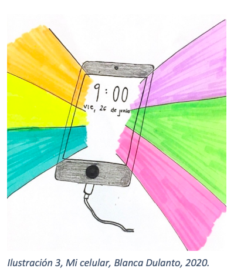9 a.m. y prendo el celular. Luz intensa atraviesa mis ojos. Mis dedos tocan la dura pantalla antes negra, pero ahora de colores vivos e iluminados. Agradecida estoy. Lloro y echo de menos, pero agradecida estoy.
Me levanto y tomo mi celular, y así todos los días. Pero fue en esa mañana del día 26 de junio en el que todo me hizo sentido. Fecha de aniversario de muerte de mi bisabuela, día en el que dije: “lo que daría para que ella también pudiera tener WhatsApp para poder conversar.” Sonrío por poder tener un contacto directo con mis amigos y amigas, familiares y queridos y a su vez me seco las lágrimas que corren por mis cachetes. Soy un enjambre de emociones mixtas y confusas. La gente me dice hormonal, pero la verdad es que esta vez, más que lágrimas por echar de menos, son lágrimas que reflejan cómo el encierro me ha abierto y me ha hecho ver lo que antes no veía. Las cosas sí podrían ser peor.
“El prendamiento estético, por tanto, puede ocurrir no sólo en la recepción de obras de arte sino, quepa insistir, ante fenómenos cotidianos” (Mandoki, K, Análisis paralelo en la Poética y la prosaica: un modelo de estética aplicada, 18). La estética va más allá de lo bello, está en la cotidianeidad. No hay día en el que yo, al despegar mis ojos al despertar, no esté viendo mi bandeja de entrada de WhatsApp, y lo mismo a la hora de cerrarlos para dormir en la noche. Y es que en estos días ¿qué es más cotidiano que chatear? Pero ya no es lo mismo, no desde esa fecha. Ahora WhatsApp no es solo la aplicación que me permite hablar con mis amigos, sino que actualmente me dan ganas de gritar ¡Qué suerte tenemos de contar con una gran herramienta para poder comunicarnos tan rápido con los que no estamos! Gritar, porque chatear me llena más que nunca.
“Nos volvemos sujetos de la fascinación, del asombro, la turbación, el espanto, o la ternura ante los objetos que en otros momentos simplemente habían permanecido desapercibidos” (Mandoki, K, Análisis paralelo en la Poética y la prosaica: un modelo de estética aplicada, 17). Actitud atenta, una manera de vivir, algo que gracias a la situación actual mundial he podido entender lo que antes no entendía. Mis conversaciones diarias como algo bello y preciado, algo envidiable. ¿Por qué? Pues porque me he dado cuenta de cómo estas inmortalizan los recuerdos. Ilustración 3, Mi celular, Blanca Dulanto, 2020. 25 Recuerdos variados, de todo tipo, ya sea subiendo en conversaciones anteriores o estar hablando con alguien y decir “¡¡Oh, ¡¡Qué bien que lo pasamos ese día!! ¿te acuerdas?”. Y es que no sabría explicar bien esa sensación de decir “cómo es que fui tan feliz y no me di cuenta”, o “cómo nunca pude ver la suerte que tuve y simplemente agradecer”.
Es ese fuerte brillo de la pantalla el que me invade, el que despierta en mi dimensión más cotidiana todos esos sentires pasados, permitiéndome resistir esta pandemia. Es que WhatsApp me da un contexto. Va más allá de los stickers enviados, más allá también de los emojis y de las fotos o videos. Es el poder de la palabra en su pleno esplendor el que me llena. A diferencia de mi compañera Carmen, las fotos no hacen lo mismo que los mensajes tallados con palabras en mi celular. Cada palabra retrata como me sentía en ese minuto y me cuenta que pasaba por mi cabeza y corazón. Hacen que vuelva a vivir esas sensaciones tan fuertes que sentí en un pasado. Se me aprieta la guata de nuevo, lloro de nuevo, río de nuevo, me alegro, me enojo, me todo. Es que me pasa todo, me invade como una gran ola de recuerdos y sentimientos a los cuales estaba acostumbrada; pero ahora que la vida es más monótona, le veo su belleza y la gran incidencia que han tenido cada uno de ellos en mi vida sin que yo me diera cuenta. “Estas emociones inesperadas, sin embargo, no son eventos absolutamente extraordinarios, sino que fluyen constantemente como aguas subterráneas en nuestra vida cotidiana y no las percibimos” (Mandoki, K, Análisis paralelo en la Poética y la prosaica: un modelo de estética aplicada, 17).
Sí, me siento ofuscada por no haber sido agradecida de la vida en su minuto y no lo puedo negar, pero me ha tocado darme cuenta gracias a la vitalidad de los recuerdos que viven en mis chats. Y como dicen por ahí, mejor tarde que nunca. Y es que antes, en mi ajetreada rutina, era como un ciego caminando por la vida.
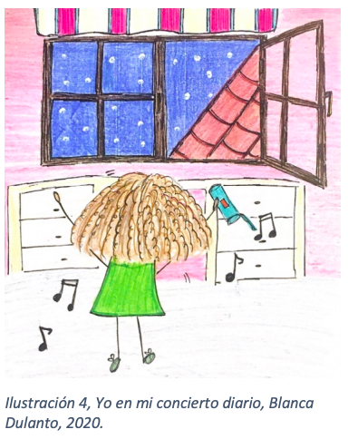Es ahora cuando me hace sentido lo que dice John Dewey “La experiencia ocurre continuamente porque la interacción de la criatura viviente y las condiciones que la rodean está implicada en el proceso mismo de la vida” (Dewey, J, 41). He vivido cosas extremadamente potentes todos los días de mi vida, lo puedo ver en mis chats, pero nunca lo supe valorar. Todo queda registrado, es mejor que la memoria humana que a veces olvida. Y es ahora donde veo, en la cotidianeidad de WhatsApp y los recuerdos que me guarda, que son como sorpresas y regalos para sobrevivir este 2020, que lo bello se vive todos los días e incluso en el encierro. Agradecida estoy porque ahora sé que cuando salga, mi vida no será igual. La aprovecharé mejor y le sonreiré todos los días.
Pero la Prosaica no es excluyente de la Poética entendida como la estética en lo artístico, sino que, como dice Mandoki son complementarios. Son dos maneras distintas de hacer estética, pero que se pueden dar juntas. En mi caso un día de cuarentena, además de hablar por WhatsApp, no sería un día cuarentena con Blanca Dulanto sin una sesión diaria de música. La música es la libertad del alma y puedo corroborar que ha sido el oxígeno para mi cuarentena, permitiéndome “…Respirar de esta falta de ti, respirar de esta ausencia de mí, respirar para sentir que estoy viva y puedo respirar sin ti, respirar...” (Bebe, 2015).
La música, en su más amplio sentido, entendida como arte, se debe alimentar de la cotidianeidad y debe ser una manifestación de esta. “El arte no se eleva por fuerza propia ni solo se apoya sobre lo cotidiano, sino que lo cotidiano es una de sus manifestaciones más notables” (Mandoki, K, Estética cotidiana y juegos de la cultura: Prosaica I,150). Y es por esto que yo en estos días, me siento realmente identificada con la canción “Respirar” de Bebe. Canción de una artista española que mueve mi persona entera, cuerpo y espíritu y me permite resistir. Cabe decir que fue mera coincidencia que la canción que más me transporta a las últimas semanas de verano con mis amigas se llame “Respirar”, es como si esta hubiera estado adelantándome todo lo que iba a sentir en el confinamiento que no tenía en mente.
Tomar mi parlante ovalado celeste, prender el bluetooth, escuchar el “tuurrum” cuando se conecta el celular y mandarme un concierto de aquellos. Un concierto en donde saco todo el encierro de mi cuerpo y canto con todas mis fuerzas, no necesariamente lindo. Y es que “mi piel en silencio grita sácame de aquí, mi piel en silencio grita oxígeno para respirar…”(Bebe, 2015). Me dejo invadir por la belleza de las notas musicales y bailo extendiendo los brazos para sentir que toco el techo (ojalá fuera cielo, pero el frío lo impide) y muevo mi cabeza con mi melena suelta bien enredada. Libertad. “Hoy necesitaría la invasión de mi espacio personal, pero no, hoy no lo habrá, no habrá abrazo, no habrá tu abrazo, hoy no lo habrá…” (Bebe, 2015). Anhelo la libertad de poder salir, de poder juntarme con amigas y poder abrazarlas en estos días que nos sentimos tan solas, pero solo queda esperar.
La bella melodía de esta canción invade mis oídos, me hace moverme y relajarme. Es positiva, aunque representa esa sensación de encierro. Tiene un ritmo y tempo marcado, como una Ilustración 4, Yo en mi concierto diario, Blanca Dulanto, 2020. 27 marcha liberadora. Esperanza. Me hace sentir viva en tiempos que siento que pierdo mi vivacidad, y colorida cuando siento que la vida ya sólo está en escala de grises. Es música, arte que se vale de los sentimientos del día a día. De mi día a día en este encierro. Necesito salir, necesito gritar, necesito liberar tantas emociones enmarañadas y no puedo más. Se pone esta canción en mi lista llamada “Para sobrevivir al COVID” e inmediatamente estallan las lágrimas en mis ojos, abro las ventanas para que me entre aire helado y pueda desahogarme cantando. Sensación de libertad, como cuando la escuché por primera vez ese 2 de marzo del 2020 con mis amigas yendo en auto a la playa con las ventanas abiertas. Aire. ¡Pónganla de nuevo!, gritaba yo. Me acuerdo como si fuera ayer, pero ya han pasado más de 4 meses y lo único que me hace sentir así de libre es poder cantar a todo pulmón esta canción, con los ojos cerrados recordando esa imagen tan viva que tengo guardada en mis recuerdos y con la ventana abierta para poder “Respirar para sentir mejor, respirar para aliviar el dolor” (Bebe, 2015).
“Cada uno en su universo siente su dolor como algo inmenso” dice la canción, y es verdad. Todos sentimos de manera distintas y resistimos de diferentes formas nuestro día a día y hay veces, como dice la canción “el dolor por momentos se hace casi insoportable, pero lo que no te mata te hace implacable...”. Son de estos momentos, los más duros y difíciles de llevar, de los que puedes salir adelante más fuerte. Creo que no hay mejor terapia que cantar y recordar. No hay mejor manera de olvidarse por un minuto de lo que está pasando a nivel global. Es muy fuerte todo lo que estamos viviendo. Yo soy una persona nueva, esta pandemia me ha transformado. Soy más sensible. Ya no puedo ahogarme en mis recuerdos y quedarme ahí sin hacer nada pretendiendo salir a flote por arte de magia. No. Ahogarme en la música y la inmortalización de mi pasado en mis chats de WhatsApp me dan la fuerza para tomar las riendas de la situación y poder decir “queda un día menos”. Me dan la fuerza para querer vivir más y plenamente. Me dan la fuerza para agradecerle a la vida, aunque estemos en la mitad de una pandemia.
En mi mascarilla
Liberarse de la incomodidad
Estudiar periodismo exige estar conectados con una realidad que muchas veces puede ser muy dura. Mirar noticias, leer nuevas historias y las entregas de trabajos siempre exigen estar conectados con nuestro mundo. A veces me genera estrés y ansiedad. Por esto, necesito estar en la constante búsqueda de qué es lo que me ayuda a salir de las incomodidades de mi mascarilla, y creo saber la respuesta: todas esas imágenes y recuerdos que tengo en mi muralla.
Quizás iba a ser un fin de semana como cualquier otro, pero no lo fue. Ya no sabía en qué día de cuarentena estábamos, solamente sabía que tenía que quedarme en la casa y preocuparme de la universidad, y en realidad de muchas otras cosas. Este período de exámenes hace que me desconecte un poco de mi entorno social, por eso me alejo por un tiempo de amigas. A diferencia de Blanca, WhatsApp deja de ser una herramienta importante para mí, me quita tiempo y además me desconcentra.
Era de noche. Pasadas las 21 horas, y ya estaba con ganas de finalizar el día, pero tenía que seguir. En mi escritorio, la vela que había encendido mi mamá para relajarme claramente ya se había apagado. Los papeles, cuadernos y lápices ya no estaban en su lugar, lo tenía todo disperso y desordenado, al igual que mi cabeza. La taza de café con leche ya se había acabado, por lo que ese aroma dulce y placentero ya no estaba. Solo quedaban dejos del olor intenso del café amargo, que a ratos se mezclaba con ese aroma a rosas de la vela ya consumida
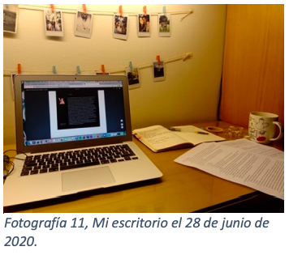Después de estar varias horas en el mismo lugar, con mis ojos fijos en la pantalla me empiezo a dar cuenta que todo está muy difícil. Los exámenes se aproximan y todavía no me siento preparada para rendirlos. Es en ese momento cuando me siento sumergida en todos estos deberes que no puedo enfrentar bien, me cuesta salir de este sentimiento de ahogo y agobio. Aquellos segundos en los que a uno le falta aire, pero que siempre existe una vía de escape. Es ahí cuando pienso: “la mirada al frente siempre es importante”. Y justamente lo es. Miro al frente y están todas las imágenes que he podido sacar con mi cámara instantánea. Todas estas fotos que han dejado grabados recuerdos anteriores a esta pandemia, cuando podíamos salir, viajar y juntarnos con amigos. Todos esos momentos importantes de mi vida cotidiana están plasmados en estas fotos que me ayudan a ver este colapso de fin de semestre de una manera diferente.
A veces siento que no tengo la capacidad para poder manejar bien esta situación. Nunca he vivido esto antes, es muy nuevo y distinto; mi dinámica en la casa, mi nueva universidad. Se me ha hecho más incómodo el trabajo en casa, me siento incapaz de manejar entregas como reportajes, ensayos, controles de lectura, que me generan una sensación tensa en mi cuerpo.
Toda esta carga se mezcla con ese olor desagradable que deja el café después de un rato, lo que se complementa con mis textos arrugados, guías destacadas con colores fuertes, agenda rayada y la larga lista de cosas. Pero es con esa mirada al frente que puedo sacar una sonrisa, sentirme fuerte, y creer que puedo salir adelante. Y es esta mezcla entre aquello desagradable con lo agradable que me hace sensible a mi entorno. “Hay que incorporar no sólo lo agradable sino su opuesto, lo desagradable, ya que lejos de desviarnos de nuestro objetivo, nos permitirá incluir en la dimensión de lo estético todos los sentidos corporales, no sólo la vista y el oı́do, y todas las categorı́as atractivas o repugnantes que atañen a la sensibilidad” (Mandoki, K, 40). A partir de la autora, genero una conexión entre aquello que es agradable, como el olor a rosas de la vela con todas las situaciones desagradables que percibo.
“Reducir la estética a una apoláustica (palabrita dominguera que significa lo relativo al placer) preocupada exclusivamente por lo placentero, la reduciría a ser una disciplina totalmente trivial” (Mandoki, K, 41). Lo que menciona la autora permite que me de cuenta que da lo mismo lo banal que sea este momento, lo desagradable e incluso lo insensible para algunos, yo sí le puedo dar un significado, y sensibilizar con aquello que me rodea todos los días y especialmente en este momento de estrés. Personalmente, la llegada de este virus me ha afectado bastante. Me he vuelto más obsesiva. Estoy constantemente buscando material e información acerca de qué está pasando. Quizás es por estar estudiando periodismo, pero también es por esa voz interna que me habla a diario y me hace querer saber todas las cosas malas que muestran en las noticias.
Desde que comencé a seguir el perfil Covid Art Museum en Instagram he descubierto nuevas páginas y perfiles que logran plasmar la actualidad en imágenes y obras artísticas. Así es como encontré a una artista española llamada Lucía Muñoz. Ella en su Instagram @photgraphyluciamunozarrabal publicó una imagen de unas mascarillas que no pude pasar por alto.
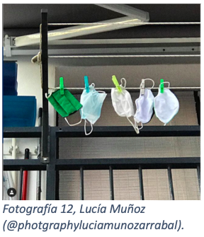Primero está la simpleza de la imagen, estos colores blancos y verdes que lo relaciono directamente con la medicina y la ciencia. Pero también está el negro que le da ese toque de negatividad a la situación. Sin embargo, lo que más representa la imagen es esta nueva forma en la que estamos viviendo, esta nueva normalidad de la que tanto se habla en los medios y ahora en mi casa. La artista dice en el pie de foto: “mascarillas por calcetines en los tendederos”. Es así como puedo ver la nueva cotidianeidad en la imagen, no solamente por este intercambio, sino por que el uso de mascarillas y su lavado se ha vuelto una acción imprescindible en nuestras vidas actuales. Me nace también en esta imagen esa sensación de lo feo y desagradable. Solamente por el hecho de ver esas mascarillas siento cómo la vida gira en torno a ellas. Me da la sensación de suciedad, por más que estén lavadas, contienen una gran cantidad de partículas de saliva.
Al ver tan clara esta manera de protección y de cotidianeidad, me voy dando cuenta de cómo mi vida también se ve tapada por una mascarilla, pero una más invisible. Ya no salgo, no respiro aire fresco como antes. El aire que exhalo y vuelvo a inhalar cuando ocupo mascarilla es la viva imagen de mi vida en cuarentena. Mi departamento se ha transformado en mi mascarilla, en mi macro barrera de protección y sin darme cuenta, me veo reflejada en ese rancio aire encerrado que se encuentra entre la parte inferior de mi boca y la mascarilla. Este aire que vuelvo a respirar una y otra vez, que no llena del todo mis pulmones y me ha quitado esa sensación de libertad.
Ahora la mascarilla se encarga de esconder todos nuestros gestos faciales. Esas sonrisas de amigos, familia, de un desconocido que le daba alegría a la vida. Arrugas que demuestran sabiduría e incluso margaritas que demuestran ternura. Las palabras también están limitadas y para que decir esas risas contagiosas. Las mascarillas, lo desagradable e incómodo de nuestras vidas con coronavirus. Las que ahora irrumpen en la comunicación y la sensación de una buena conversación. Pero que, al mismo tiempo, te protegen.
Umberto Eco en su texto Historia de la Fealdad hace una reflexión que creo que es pertinente para esta imagen; “¿El recurso de lo feo es por tanto, un medio para denunciar la presencia del Mal?” (Eco, U, 422). En esta creación se muestra una realidad sin muchos elementos artísticos. La imagen me da la sensación de que se hace referencia a este nuevo y apestoso virus que nos tiene encerrados en las casas. Permitiéndome ver el Covid-19 como este Mal. Este tipo de imágenes permite dejar registro de una realidad nueva, y como menciona Umberto Eco, algo feo o desagradable puede ser arte mañana. Aunque sea carente de recursos artísticos tradicionales, y no cumpla con los estandartes de lo bello, nos va a servir en un futuro para demostrar y plasmar una realidad. La cual, dentro del marco de la cotidianeidad, sí tenía elementos para representar una nueva sensibilidad emergente.
Me parece que uno de los grandes motivos por lo que busco constantemente material relacionado al coronavirus es por este hecho de ver la realidad. Por más que me sienta muchas veces ahogada con tanta información e imágenes, creo que como persona y futura periodista es importante estar informado acerca de la actualidad. Pero al mismo tiempo debo buscar algo saque de ese encierro mental que genero dentro de mí cuando me expongo a la información del coronavirus. Debo dejar de respirar ese mismo aire. Durante este tiempo de cuarentena la angustia, el estrés y el hecho de sentirme ahogada es uno de los sentimientos que más se repite. Pero siempre hay que encontrar de alguna u otra manera la forma de salir adelante y justamente para mí el poder de los recuerdos grabados en las fotos colgadas en mi pared. Si bien traen mucha nostalgia, son un motivo para seguir luchando y resistiendo a esta nueva forma de vivir. Mirar para al frente, ver mis fotos, sentir que esta gran mascarilla que me rodea se desvanece por un minuto, me hace sentir más ligera para poder seguir con mis trabajos y mi vida en general.
Compartir pantalla
Escapar de la realidad
Lo kitsch está contantemente presente en nuestra vida, encontramos lo bello en lo rechazado, el mal gusto o la exageración. Por otro lado, estamos constantemente buscando la felicidad, el placer, escapar de la realidad y revitalizarnos para salir adelante. Los recuerdos son la clave para sobrevivir a esta pandemia.
No fueron 15 ni 40 días, ya van más de 100. Estamos encerrados, estresados, asustados, los días pasan y no se nota mejoría alguna, ningún indicio de que esto vaya a terminar pronto, solo queda esperar.
Pensando que hacer para matar el tiempo, y evadir el estudio, decidí buscar alguna serie. Entre miles de recomendaciones, una portada me llamó la atención por su intenso color amarillo, ya la he visto un par de veces, pero igualmente vale la pena una tercera. Pongo play a la serie, Glee se apodera de mi televisión. Un mundo de colores ilumina la pantalla. Canciones y coreografías. “La acumulación de efectos, la ausencia de sobriedad en los medios empleados, que dan como resultado la sinestesia musical” (Moles, A, 136), hacen que cualquier persona de la audiencia se sienta parte de este pomposo espectáculo.
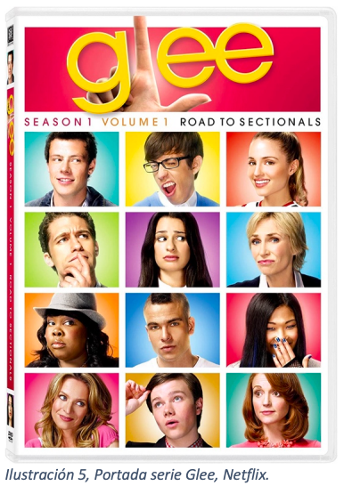La serie cuenta la historia de varios adolescentes, con distintos intereses y estatus dentro de la secundaria. Trata sobre su paso por esta y cómo sobreviven a ella gracias a la amistad generada en su nueva familia, el club de coro. Los bailes, las fiestas, la interacción social, todo es presentado de la manera más exagerada posible, con emociones potentes, elaborados vestuarios y diversas lecciones de vida.
Cada capítulo ofrece un desfile de covers de canciones, yendo desde clásicos como los de Journey hasta canciones de Britney Spears y hits de principios de los 2000. Es imposible no viajar en el tiempo al oírlas, me transportan a años anteriores, experiencias pasadas, todo lo asociado a aquellos tiempos donde podíamos vivir con normalidad, sin ningún virus acechándonos a la vuelta de la esquina. Estos recuerdos me vitalizan, me rescatan de la rutina, permitiéndome respirar tranquilamente y sin preocupaciones, ya que en aquellos días el término pandemia era solo parte de libros y películas.
Se acaba la serie y vuelvo a la realidad, es hora de conectarme a mis clases de la tarde. Mientras escucho vagamente lo que dice el profesor y observo a mis compañeros tras la pantalla, mi mente divaga por las escenas que acabo de ver, siento envidia por los personajes, en especial el contacto físico, las reuniones entre amigos, las clases presenciales, es como si me restregaran en la cara aquello que hoy no nos es posible tener.
Siento como si estuviéramos viviendo en otra dimensión, todos los días cortados con el mismo molde, la misma rutina, las mismas actividades. Los dolores de espalda son pan de cada día gracias a las extensas horas frente a la pantalla.
¿Recordaremos estos días en blanco y negro? En unos años más cuando repasemos esta etapa de nuestras vidas, ¿tendremos algo interesante que contar o simplemente lo veremos como un vacío? Miro por la ventana, ya se está oscureciendo, las estrellas comienzan a aparecer lentamente en el cielo nocturno. Siento como baja la temperatura y me obligo a mirar nuevamente la pantalla para darle las gracias al profesor por la clase, es la última del día, otra jornada más se da por terminada, mañana todo comienza nuevamente.
Pero a pesar de la monotonía habitual, hoy hay un cambio. Es el cumpleaños de una de mis amigas, decidimos hacer una fiesta vía Zoom. Para hacer de esta reunión online un poco más llamativa, pusimos como requisito asistir disfrazadas. Como si al no presentarnos como nosotras mismas, pudiéramos escapar de esta realidad. Son las ocho de la noche, ya disfrazada enciendo mi cámara y me dispongo a entrar a la reunión, una vez dentro quedo maravillada ante el espectáculo que tengo en frente. Payasos, unicornios, personajes de series e íconos virales me reciben, ya no son las mismas caras de siempre, me veo transportada a una nueva dimensión donde la creatividad es ley y mientras más irreconocible estás, mayores son las miradas y felicitaciones que obtienes, seguidas de una que otra mención en las redes sociales.
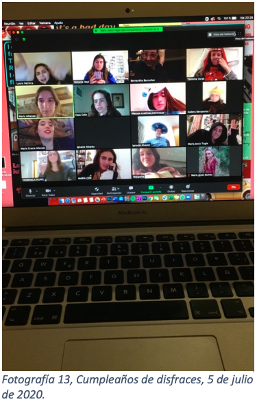A pesar del sentimiento de encierro y ahogo que proporciona la mascarilla, la cuarentena, que expresa Valeria, en este momento yo experimento libertad, viajo en el tiempo y vivo los recuerdos de manera semi-real. Casi siento que estoy presente, se asemeja a una experiencia de realidad virtual. En un abrir y cerrar de ojos me percato de que ya es tarde, mañana tengo clases a las 8:30, por lo que decido despedirme de esta fantasía y volver a la realidad. Mientras me quito el disfraz, no puedo evitar pensar en como, aunque haya sido por unas pocas horas, olvidé por completo el hecho de que estamos en medio de una pandemia. Fui feliz, olvidé los problemas del mundo y me recargué de recuerdos positivos, que me llenan de energía para afrontar el encierro.
Me llama la atención la manera en que una experiencia tan simple como conectarme a una video llamada, cambió completamente mi ánimo, causando en mi la sensación de libertad y alegría al transportarme a este mundo de personajes ficticios e historias pasadas. “Los individuos gozan de lo que pueden y como pueden: las travesuras de la sensibilidad son infinitas” (Moles, A, 41)
Ambas son experiencias presentes en mi vida actual, pertenecen a esta nueva rutina. Una es más común que la otra, ya que cumpleaños como ese no suceden todos los días. Igualmente, la envidia que siento al ver Glee es inmensa, detalles que antes daba por sentados resaltan en la pantalla, haciéndome sentir impotencia por no poder vivir esas sensaciones y experiencias que antes eran comunes en mi vida. Porque es verdad, puedo intentar recrearlas en alguna medida, a través de una video llamada. Este truco funciona algunas veces, engañando a mi mente, pero no esta ni cerca de igualar las sensaciones que ocurren al experimentar físicamente la vida, el contacto humano es invaluable.
Sin embargo, no todo es tragedia, a pesar de los celos que me generan este contraste entre mi vida y la que veo tras la pantalla, he encontrado una realidad. A través de la serie, puedo vivir esas experiencias que hoy día no es posible experimentar por mi cuenta, esto gracias a las historias de los personajes, sus emociones y problemas. Me identifico con sus experiencias, incluso me siento parte de la trama. Esta se convierte en mi vía de escape y me ayuda a levantar los ánimos en el encierro. Lo tosco de la exageración de la serie, también aporta a sentir que estoy ahí, haciendo que mis sentidos capten aquella realidad y se apropien de ella. Me permiten experimentar ese placer mientas veo el capítulo, uno un poco más duradero que el experimentado vía online. Aquel gozo lamentablemente se esfuma, convirtiéndose en un recuerdo al terminar esos cuarenta minutos de entretención. Vuelvo ansiosa a ver un episodio más, porque como dice Moles: "El placer sólo existe en el instante, y nada más individual, más incierto, más incomunicable que el placer" (Moles, A, 41).
Curiosa es la coincidencia al observar ambas imágenes, en el Zoom y en la portada de la serie, los personajes están divididos en cuadrículas, cada uno con su propio mundo, pero unidos en un mismo plano. Estamos separados, divididos, aislados, sin embargo, encontramos la manera de reunirnos, hablar y recordar, buscando y dando apoyo para superar juntos estos momentos de crisis.
Así es como, pese al aparente contraste, ambas experiencias cumplen el mismo fin: escapar de la realidad. Ellas me rescatan del ahogo de la rutina, me permiten volver a respirar